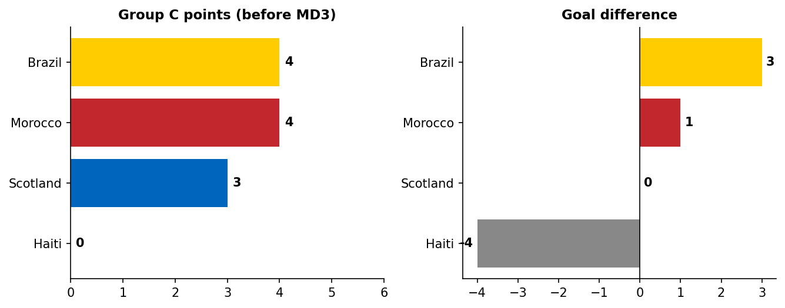

Scotland vs Brazil
| Stakes | Brazil need a draw to top the group; Scotland need a win to guarantee qualification, a draw likely still enough as a third-place team. |
| Group / Table | Brazil 4pts, Morocco 4pts, Scotland 3pts, Haiti 0pts going in |

Brazil have won 6 of 8 all-time meetings, drawn 2, never lost to Scotland — including their last World Cup meeting, a 2-1 Brazil win in 1998.



Scotland (4-4-1-1): Gunn; Patterson, McKenna, Hendry, Robertson (c); Gannon-Doak, Ferguson, McLean, McGinn; McTominay; Shankland. Brazil (4-3-3): Alisson; Danilo, Marquinhos (c), Magalhaes, D. Santos; Casemiro, Guimaraes, Paqueta; Rayan, Cunha, Vinicius Jr. Neymar fit, on the bench.
Scotland's actual XI is more conservative than the pre-match guess: no Souttar, Hanley, or Adams, and a flat back four instead of a back three. McTominay plays as a free No.10 behind lone striker Shankland — a narrow, containing shape built to stay compact through the middle rather than press high or attack with width.
That shape has a real cost out wide. Brazil's full-backs find more room to overlap than against a back three, and Brazil's actual 4-3-3 is well-built to exploit exactly that space through Vinicius Jr and Rayan.
Key matchup to watch: Scotland's flat back four vs Brazil's front three in transition.

The fastest possible nightmare start for Scotland. McKenna received a routine ball inside his own box under no real pressure, took a touch to clear, and Rayan closed him down and won the ball clean. Rayan squared it across the six-yard box for an unmarked Vinicius Junior, who finished into an empty net.

Vinicius Jr found the net a second time after stripping the ball off Jack Hendry and surging into the box — but VAR ruled it out for a foul Vinicius committed during the challenge that won the ball, not offside. Score stayed 1-0.
Second time a Scotland centre-back has been pressured into losing the ball in a dangerous area by the same player — a clear sign of where Brazil's press is targeting.
- Vinicius Junior (Brazil) — already involved in the opener; biggest individual threat with space out wide.
- Rayan (Brazil) — starting for the injured Raphinha, the press that won the opener.
- Scott McTominay (Scotland) — Scotland's clearest individual source of a goal threat from the free No.10 role.
- Andy Robertson (Scotland, capt) — set-piece delivery is Scotland's most realistic route to a goal.

Going 1-0 down in the 1st minute reinforces every pre-match concern about Scotland's setup. Most likely next scorers: Vinicius Jr or Cunha for a second Brazil goal; if Scotland respond, it's most likely via a Robertson set-piece finished by Hendry or McKenna.
This prediction updates as the match progresses — check back for the final post-match version with result, ratings, and what actually happened vs this prediction.